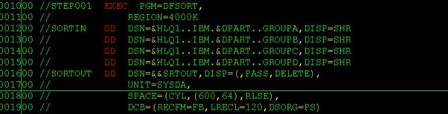

IBM主机技术一本通笔记续
2011-08-21
1、JCL每行80列
原来这是因为在1960年那个年代，程序员使用的是穿孔卡片来将JCL作业控制语句一个一个的输入系统，构成了批量作业，而当时穿孔卡片只有80列。
2、JOB语句的关键字参数
ADDRSPC
REGION
MSGCLASS
SECLABEL
PASSWORD
BYTES
CLASS
RD MSGLEVEL
TIME
PERFORM PAGES
COND
LINES
CARDS
TYPRUN
PRTY
SCHENV
GROUP
RESTART
NOTIFY
USER CCSID
标有颜色的几个是我自己比较常用到的。
上张包含了这9个常用JCL关键字参数的图(当然，平常工作当中一般不可能在单个JCL当中都包含了所有的这9个关键字，我这里只是为了更好的说明才把它们罗列在一个JCL里面的，这点要明白)
!
CLASS : 是作业运行队列的优先级，MSGCLASS是作业输出信息的级别，它规定了作业输出信息送往哪里显示。CLASS和MSGCLASS都是公司规定好了的，肯定有文档可以查看具体信息的。
{kind=link}
NOTIFY: 是指最终作业运行的结果通知给谁，可以写详细的ID，比如IBMUSER，也可以写通用的参数，比如&SYSUID，这样的话，谁运行它就显示给谁看。
REGION: 规定作业所需的实存或虚存的大小，在JOB level定义的话就运用到整个JOB的所有STEP，当然，可以每个STEP单独定义REGION的大小。
TIME : 用来限制作业占用CPU的最长时间，当TIME参数达到指定的时间时，作业就会异常终止，用来避免死循环等低级错误。图中我们规定CPU时间为1分30秒。TIME参数还可这么写：
TIME=l440 ----1440 mins
TIME=NOLIMIT ---- nolimit
TIME=MAXIMUM ----357912 mins
USER和PASSWORD :一起用，比如你自己的权限比较低，你申请了一个临时的权限比较高地ID来submit作业的时候，你就可以这么指定，系统会认为这个JOB是那个有较高权限的人提交的，而不是你提交的。
RESTART: 用来指定JOB从哪一个STEP开始执行，不然默认就是从第一个STEP开始执行。
COND: 指定了单个STEP执行的前提条件，用法很灵活，这里不展开。
3、PARM参数有100个字符限制
PARM参数用来在JCL的具体STEP中给程序传递变量参数，它用引号括起来，不能超过100个字符。
4、Dummy 哑数据集
每个程序需要访问的数据集在作业流中都必须有一个ddname与其对应。如果你在程序里面定义了文件而在JCL中没有定义对应的DD语句，就会ABEND。当有时候输入数据集对程序来说是可选的或者程序要输出地数据集不是必需的时候，我们就用Dummy数据集来跳过它所有的I/O操作。
5、DATASET串联(Concatenation)

使用这个特性是很方便的，特别是在一些SORT的场合，把几个DATASET同置于一个SORTIN下面。只是要注意的是这些DATASET的属性要完全一致，就是它们所有的DCB子参数必须一致。包括RECFM，LRECL，BLKSIZE。
Category: Mainframe Tagged: z/OS 主机一本通